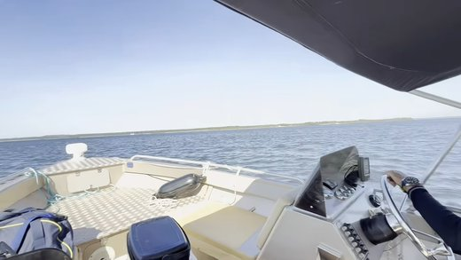

00:00:18.033
Vista da proa da lancha durante a navegação, com vegetação baixa no horizonte.
Rio Arapiuns, Santarém (PA) · confirmado
A narração situa o percurso no rio Arapiuns e relembra a parada anterior em Tucumã.
Transcrição · 00:00:00 | 00:00:08 | 00:00:16
Turismo Aqui — quadro de vídeo publicado no YouTube